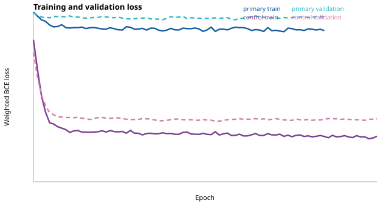
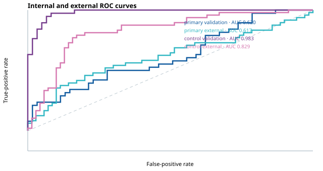

primary
RAI2, CTBP1, CTBP2
ERG excluded to reduce direct-marker leakage. This is the primary analysis.
| Set | n | ROC-AUC | Balanced accuracy | Sensitivity | Specificity | F1 |
|---|---|---|---|---|---|---|
| Validation | 99 | 0.620 | 0.534 | 0.526 | 0.541 | 0.465 |
| External | 118 | 0.617 | 0.500 | 0.000 | 1.000 | 0.000 |
marker inclusive control
ERG, RAI2, CTBP1, CTBP2
ERG included as an explicitly labelled positive control; do not present this as the primary predictive result.
| Set | n | ROC-AUC | Balanced accuracy | Sensitivity | Specificity | F1 |
|---|---|---|---|---|---|---|
| Validation | 99 | 0.983 | 0.941 | 0.947 | 0.934 | 0.923 |
| External | 118 | 0.829 | 0.500 | 0.000 | 1.000 | 0.000 |

